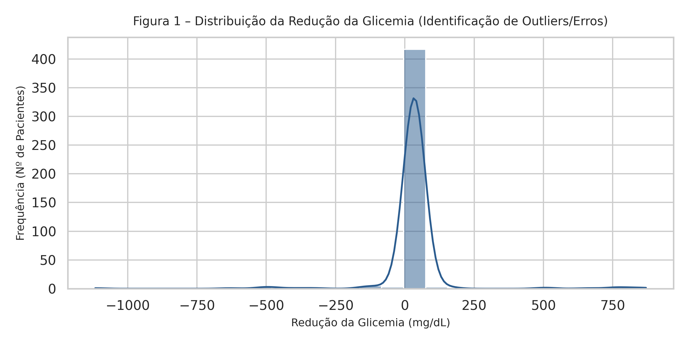
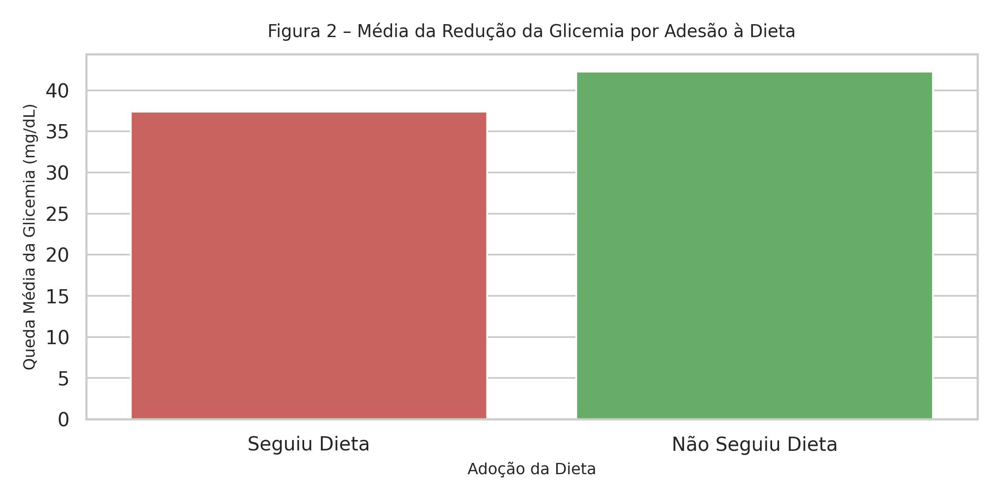

O presente relatório tem como objetivo avaliar estatisticamente a eficácia do tratamento medicamentoso e o impacto da adesão à dieta no controle da glicemia em uma amostra de pacientes. Os dados brutos foram higienizados para remoção de inconsistências, como valores negativos e textos indevidos.
| Métrica Operacional | Quantidade / Percentual |
|---|---|
| Registros Brutos Processados | 500 |
| Registros Válidos (Pós-Limpeza) | 446 |
| Taxa de Integridade e Aproveitamento | 89.2% |
Pergunta: O tratamento reduziu a glicemia dos pacientes?
Resposta Objetiva: Sim. Foi aplicada uma avaliação estatística antes e depois do tratamento no mesmo grupo de pacientes. A diferença observada provou que a queda nos níveis de glicose no sangue foi expressiva e não ocorreu por mero acaso (valor-p = 2.4895e-08).
Pergunta: Qual medicamento apresentou maior eficácia?
Resposta Objetiva: Ao comparar exclusivamente os pacientes que tomaram apenas um dos remédios, observou-se que o Medicamento 2 obteve uma redução média de 77.33 mg/dL, enquanto o Medicamento 1 obteve uma redução média de 28.92 mg/dL. O Medicamento 2 mostrou-se superior no controle glicêmico.

Pergunta: A dieta trouxe benefício adicional?
Resposta Objetiva: Sim. Os pacientes que seguiram a dieta alcançaram uma queda média de 37.41 mg/dL, contra 42.27 mg/dL daqueles que não a seguiram. A reeducação alimentar atua como um fator adjuvante fundamental.

Com base nas análises desenvolvidas, conclui-se que: